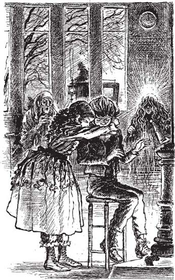

6
Listen to Part 1:

Scrooge thời niên thiếu
Scrooge nhìn ra cánh đồng xung quanh.
‘Đúng rồi,’ anh ta nói. ‘Lúc còn nhỏ tôi sống gần đây.’
Bỗng nhiên, Scrooge cảm thấy rất vui. Rồi anh ta sợ hãi. Rồi anh ta lại thấy vui. Rồi anh ta lại buồn.
‘Mắt anh có nước mắt sao?’ con ma nói rất nhỏ. ‘Anh đang khóc sao?’
‘Không, không,’ Scrooge nhanh chóng nói.
Scrooge và con ma bước dọc theo con đường cho đến khi họ thấy một thị trấn nhỏ. Scrooge nhận ra thị trấn đó. Anh ta biết nhà thờ, con sông và cây cầu.
Rồi anh ta thấy một số cậu bé cưỡi ngựa. Họ tiến đến chỗ anh ta và Scrooge cũng nhận ra tất cả những cậu bé đó. Anh ta nhớ tên của họ. Các cậu bé rất vui. Họ hét to với nhau. ‘Giáng sinh vui vẻ! Giáng sinh vui vẻ!’
‘Chúng không thể nhìn thấy anh,’ con ma nói. ‘Chúng là những người từ kiếp trước của anh.’
Scrooge cảm thấy vui khi nghe các cậu bé hét ‘Giáng sinh vui vẻ!’
Listen to Part 2:
‘Tại sao tôi lại vui?’ anh ta tự hỏi. ‘Tôi không thích Giáng sinh. Thật vô nghĩa. Thật ngu xuẩn.’
‘Gần đây có một ngôi trường,’ con ma nói. ‘Có một đứa trẻ trong trường. Bạn bè đã quên mất nó. Nó cô đơn.’
‘Tôi biết,’ Scrooge trả lời. ‘Tôi nhớ.’
Con ma và Scrooge bước về phía ngôi trường. Đó là một tòa nhà gạch cũ. Họ đi vào một căn phòng dài, lạnh lẽo. Có một cậu bé nhỏ đáng thương ngồi bên lò sưởi. Scrooge ngồi xuống cạnh cậu bé. Có những giọt nước mắt trên khuôn mặt của Scrooge.
‘Đứa trẻ tội nghiệp,’ anh ta nói. ‘Ước gì…’
‘Anh ước gì?’ con ma hỏi.
‘Giờ thì đã quá muộn rồi,’ Scrooge trả lời. ‘Đêm qua có một cậu bé đứng ngoài văn phòng của tôi. Nó hát một bài hát mừng Giáng sinh. Tôi bảo nó đi đi. Giờ thì tôi ước mình có thể cho nó ít tiền.’
Con ma mỉm cười. ‘Tôi sẽ cho anh thấy một ngày Giáng sinh khác ở ngôi trường này,’ nó nói.
Căn phòng thay đổi. Nó trở nên tối hơn, bẩn hơn và cũ hơn. Cậu bé lớn hơn và già hơn. Nó vẫn cô đơn và buồn.
Đột nhiên, cánh cửa mở ra. Scrooge thấy một cô gái trẻ chạy vào phòng. Cô chạy đến chỗ cậu bé. Cô quàng tay quanh cổ cậu bé và hôn cậu.
Listen to Part 3:
‘Em đến để đưa anh về nhà, Ebenezer,’ cô hét lên vui vẻ.
‘Về nhà, Frances?’ cậu bé nói. ‘Em có thể đưa anh về nhà sao?’
‘Có chứ,’ cô trả lời. ‘Bố nói bây giờ anh có thể về nhà. Anh không phải quay lại trường nữa. Bố đã cho em đến đón anh về nhà.
‘Anh sẽ về nhà đón Giáng sinh. Chiếc xe ngựa đang đợi ở ngoài.’
Chẳng mấy chốc, Scrooge thấy những đứa trẻ lên xe ngựa. Anh ta thấy những con ngựa kéo xe ngựa đi khỏi trường.
‘Em gái anh, Frances, là một cô gái tốt bụng,’ con ma nói. ‘Và cô ấy cũng tốt bụng khi đã trưởng thành. Cô ấy đã mất cách đây rất lâu, nhưng cô ấy có một đứa con, đúng không?’
‘Đúng vậy,’ Scrooge nói. ‘Cô ấy có một đứa con trai.’
‘Cháu trai anh, Fred,’ con ma nói.
‘Đúng vậy,’ Scrooge trả lời.
Rồi đột nhiên Scrooge và con ma xuất hiện trong một thành phố.
Listen to Part 4:

‘Em đến để đưa anh về nhà, Ebenezer,’ cô hét lên vui vẻ.
Các đường phố chật cứng người, xe ngựa và ngựa. Trời tối và lạnh. Nhưng những cửa hàng thì sáng đèn. Mọi người đang mua những món đồ ăn và đồ uống ngon. Đây là một lễ Giáng sinh khác với cuộc sống trước đây của Scrooge.
Table of contents
- Title Page
- Contents
- A Note About the Author
- A Note About Life in England in the Nineteenth Century
- 1 Ebenezer Scrooge
- 2 Visitors for Scrooge
- 3 Marley’s Ghost
- 4 News for Scrooge
- 5 The Ghost of Christmas Past
- 6 Scrooge as a Boy
- 7 Christmas with the Fezziwigs
- 8 The Girl Who Loved Scrooge
- 9 The Ghost of Christmas Present
- 10 Christmas with the Cratchits
- 11 A Merry Christmas Everywhere
- 12 The Ghost of Christmas Yet to Come
- 13 Tiny Tim
- 14 A Changed Man
- Points for Understanding
- Copyright Page